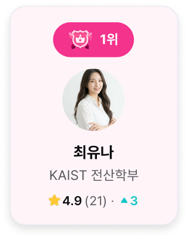
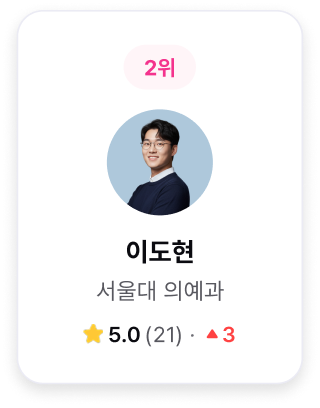
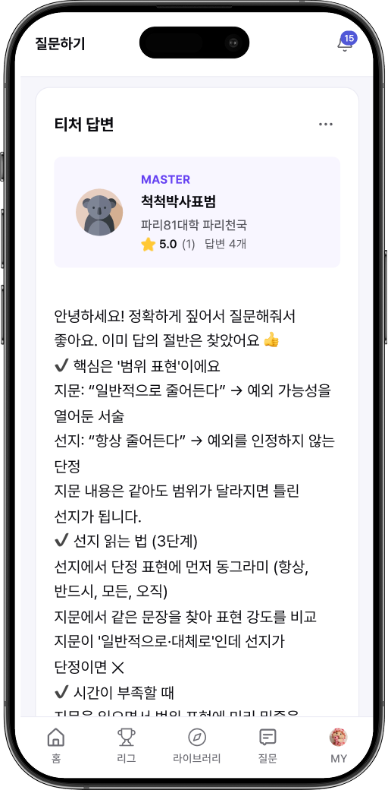
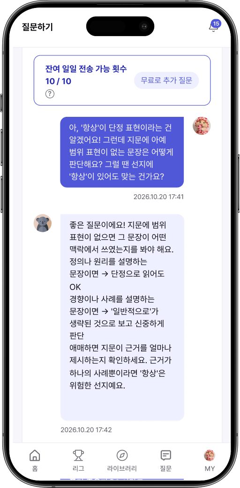

티처스리그
- 홈
- 몰입공부시스템
- 티처스리그
막히는 건 뭐든,
리그가 답한다.
학습 Q&A, 이제 순위를 겨루는 티처들이 답해요
막힌 문제도, 막막한 공부 방향도요.
#명문대 출신 티처
#5단계 티처 티어
#학생 평가가 반영되는 순위
공부하다
질문이 생기는 순간
이제 고민하지 말고, 티처스리그로 해결하세요!
1
정답은 맞췄는데 왜 맞았는지 모르겠을 때
맞긴 맞았는데 완벽히 이해하지 못했거나 다음에도 풀 수 있을지 자신이 없어요.
2
어려워서 그냥 넘긴 문제가 있을 때
어디서부터 막혔는지 모르겠고 마땅히 물어볼 사람도 생각나지 않아요.
3
이 시기에 뭘 해야 할지 모르는 날
수능/입시까지 얼마 남지 않았는데, 지금 이 순간 무엇에 집중해야할지 모르겠어요.
VISUAL B4
경쟁은 티처가,
이득은 내가
티처의 순위와 티어는 시즌 내내 오르내려요.
잘 설명해야 올라가니까, 질문 하나하나에 정성을 들여요.
지금 가장 실력있는 티처가 누구인지 티어로 알 수 있어요.
한 번쯤
높은 학력에 기대했지만낮은 답변 퀄리티에실망한 적이 있을 거예요.
티처스리그에선
티처의 티어 · 순위가 학생
평점으로 결정돼요! 덕분에답변을 신뢰할 수 있어요.


리그를
결정짓는 건 학생
국어는 이OO 티처, 수학은 박OO 티처. 목표 대학 출신 티처의 티어·리뷰를 보고 내 라인업을 짜요.나의 평점과 리뷰가 모여 다음 스타 티처가 탄생해요.
VISUAL B5
VISUAL B6
대학 합격을 먼저
이루어낸 티처들
학적 확인을 거친 명문대 출신³ 티처들이 답해요.
입시 경험을 통해 얻은 노하우를 바탕으로문제 풀이부터 학습 방향까지 알려줘요.
#명문대 학적 확인
#엄격한 티처 심사
#지속적인 실력 검증
먼저 써 본 수험생
10명 중 8명이 만족²
4.33
5점 만점 만족도
84.3%
만족·매우 만족이라고
답한 비율
1,640명
먼저 써 본
수험생
응답 분포
5점 · 4점
84.3%
3점
12.1%
2점
2.4%
1점
1.2%
만족한 사용자 1,383명

산출 근거

※
조사명: 2026 하반기 잇올 통합 만족도 설문조사
※
조사 주체·기간: (주)잇올 · 2026.10.2 ~ 10.11
※
조사 대상·방법: 잇올 전국 센터·캠프 재원생 · 온라인 설문(실명·익명 선택)
※
응답: 전체 3,186건 제출(고유 응답자 3,080명). 이 중 티처스 1.0 이용 경험자 1,640명이 아래 문항에 응답
※
문항: 「티처스를 이용하면서 전반적으로 얼마나 만족하셨나요?」 — 5점 척도(1점 매우 불만족 ~ 5점 매우 만족)
※
만족도 4.33점: 응답자 1,640명 점수의 산술 평균
※
만족 비율 84.3%: 만족(4점) 515명 + 매우 만족(5점) 868명 = 1,383명 ÷ 1,640명
※
응답 분포: 5점 868명(52.9%) · 4점 515명(31.4%) · 3점 198명(12.1%) · 2점 40명(2.4%) · 1점 19명(1.2%)
※
비고: 티처스 1.0(2025.12~2026.04 운영)은 티처스리그의 이전 서비스입니다. 중복 제출로 추정되는 응답을 제외해도(1,618명) 평균 4.33점 · 만족 비율 84.4%로 같습니다.
올리고, 받고,
이해될 때까지
1
올리고
질문할 과목,
난이도와 함께 궁금한 점을
작성해요.
2
받고
풀이와 함께,
내가 어디서 막혔는지까지
짚어 줘요.

3
이해될 때까지
답변을 읽고도 헷갈리는
부분이 있다면 이어서 질문하고
답을 받을 수 있어요.

TIP
나와 비슷한 고민을 가진 학생들의 질문과 티처의 답변을 둘러볼 수 도 있어요! 먼저 올라온 답변에서 답을 찾아보세요.
×
재원생이
먼저 써 본 서비스,
재원생에게 먼저
재원생들의 사랑을 받은 잇올 티처스⁴가 새롭게 탄생했어요. 이제 재원생 전용 혜택으로 보답 해드려요.
매달 6,000P
한 달 100문제 가량¹
별도로 안내드릴 코드를 입력하면 매달 새로 지급돼요.
* 잇올스파르타/기숙학원과 제휴하여 제공되는 외부 플랫폼 서비스입니다. 혜택은 잇올과 티처스리그의 정책에 따라 달라질 수 있습니다.

세 단계면 첫 질문까지
1
티처스리그 실행하기
아래 버튼으로 앱을 받거나, 잇올앱 홈에서 바로 열어요.
2
가입하고 코드 넣기
회원 가입을 하고, 안내받은 코드만 넣으면 끝이에요.
3
첫 질문 작성
공부 중 생긴 질문을 등록해요.
App Store
Google Play
PC에서는 웹으로 시작하기
자주 묻는 질문
답변은 언제 받을 수 있어요?

질문마다 달라요. 티처가 답을 작성하면 알림으로 알려 드려요.
급한 질문은 부스트로 순서를 앞당길 수 있고, 기다리는 동안엔 티처스 라이브러리에서 다른 학생들 질문 및 티처들의 답변을 찾아볼 수도 있어요.
문제 말고 공부 방법도 물어봐도 돼요?
임의 내용
원하는 티처한테만 물을 수 있나요?
임의 내용
답변을 받지 못하면 질문 등록에 사용된 포인트는 어떻게 되나요?
임의 내용
티처가 잘못된 답변을 하면 어떻게 되나요?
임의 내용
내 질문도 공개되나요?
임의 내용
포인트를 모두 소진하면 어떻게 되나요?
임의 내용
잇올 아이디로 로그인이 안 돼요.
임의 내용
앱을 꼭 설치해야하나요?
임의 내용
티처의 실력이 곧 나의 실력으로
잘 설명하는 티처가 위로 올라가고, 그 설명이 내 실력이 돼요.
재원생 혜택으로 시작하기
주석
¹ 잇올 재원생 전용 혜택. 별도 결제 없이 시작하며, 평균 난이도 질문 기준 한 달 100문제 가량. 질문 난이도와 티처 티어에 따라 사용 포인트가 다릅니다. 혜택은 잇올과 티처스리그의 정책에 따라 달라질 수 있습니다.
² 2026 하반기 잇올 통합 만족도 설문(2026.10.2~10.11), 티처스 1.0 이용 경험자 1,640명 응답 기준. 자세한 산출 근거는 해당 영역 「산출 근거 보기」.
³ 재학·휴학·졸업 포함.
⁴ 티처스 1.0(2025.12~2026.04) 기준.